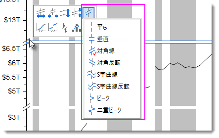

FAQ-997 軸破断の形状を変更するには？
Remove-Gap-Axis-Break
最終更新日：2020/2/17
軸破断は、デフォルトで斜線の記号です
軸破断のシンボルを変更する
- 軸破断を追加後、破断シンボル上でクリックして、ミニツールバーの軸破断シンボルボタンをクリックします。
- サブメニューからシンボルスタイルを選択します。
- 
下のグラフのように軸破断のギャップを削除する

- グラフをアクティブにした状態で、まだ開いていない場合はスクリプトウィンドウを開きます（メニューのウィンドウ：スクリプトウィンドウ）。
- スクリプトウィンドウに次のLabTalkコマンドlayer.x.breaks.gapをコピーして貼り付けます。実行するにはEnterキーを押します。
layer.y.breaks.gap=0
キーワード:軸破断, ギャップ, 軸破断プロパティ, 記号無しの破断, 垂直, 斜線, 斜線反転, S曲線, S曲線反転, ピーク型の破断, 二重ピーク型の破断